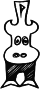

Trappermapper
Det här är en karta framtagen av programfunktionärerna på Vässarö.
Under filtret till höger kan du välja vad du vill se på kartan. Du kan också klicka på Äventyret Vässarö-loggan till vänster för att se lägerskolans aktiviteter.
Använd inte kartan inte som ett navigationsverktyg på vattnet.
Du kan hjälpa till med kartans utveckling genom att prata med oss på Lillgårn, mejla oss på program(at)vassaro.se eller bidra på Github.
